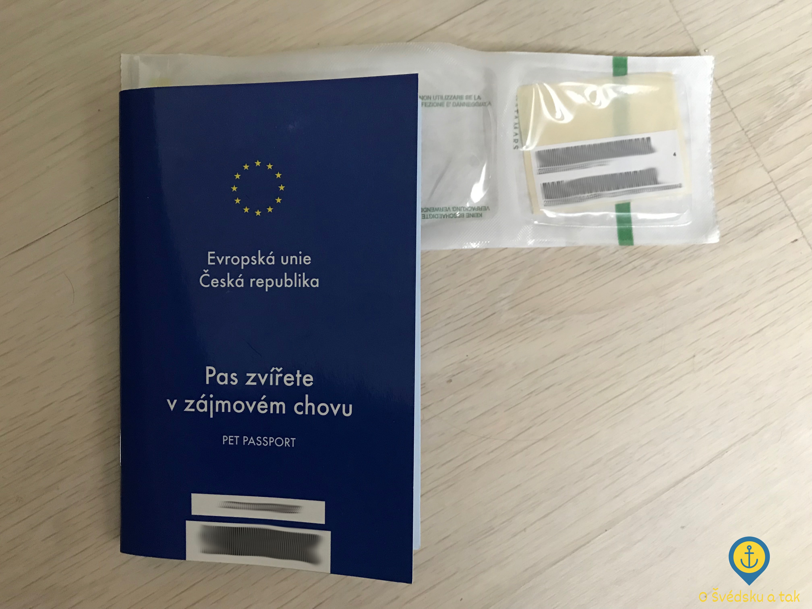
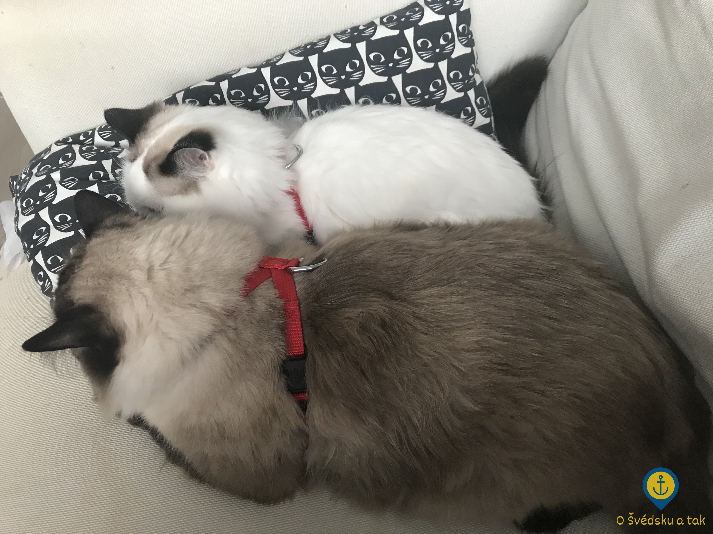
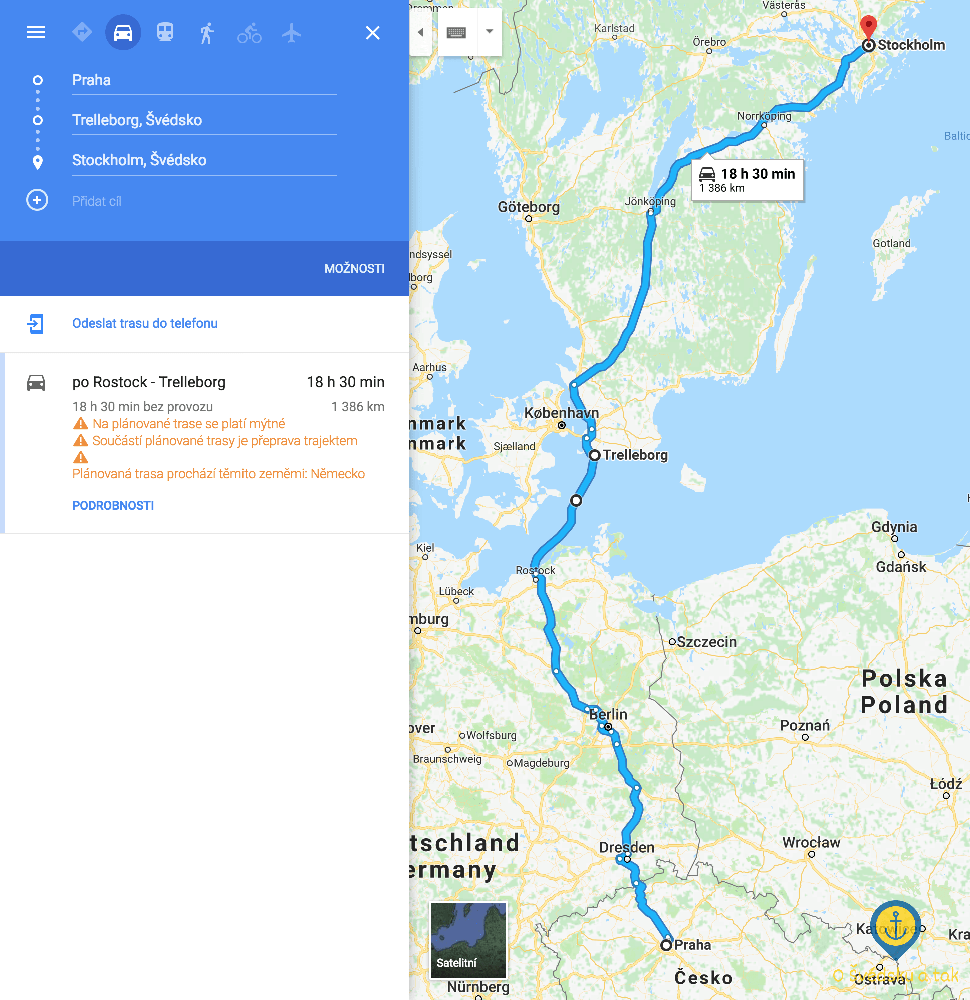
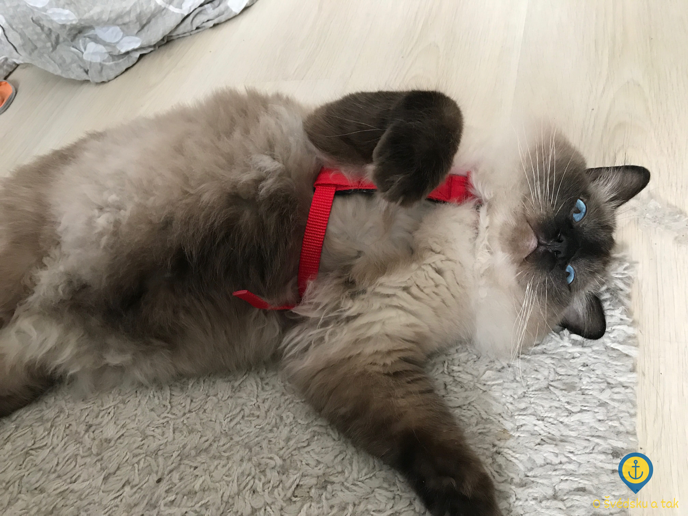
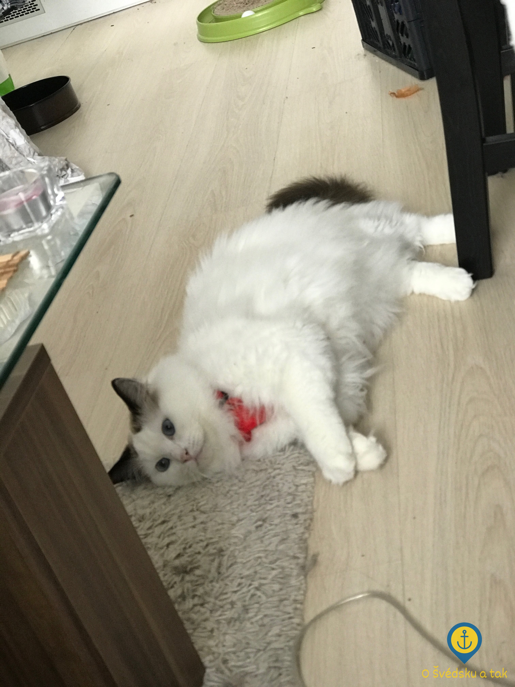

Mňau, já jedu taky
Publikováno 28. 11. 2017 (11:38) v kategorii Odjezd z ČR • Napsala Ivana Doležalová • Přečtete za 6 minut
Logistická stránka věci nám na samotném začátku plánování stěhování připadala až jako ten nejmenší problém a v porovnání s hledáním práce nebo s hledáním bytu jako naprostá prkotina. Čím více se ale termín blížil, tím více rostla nutnost začít řešit i toto. Musím říct, že kdybychom se nestěhovali spolu s kocoury, nábytkem, autem a plachetnicí, navíc do vybaveného bytu, prkotina by to skutečně byla. Stačilo by sednout na letadlo a odletět do Stockholmu. Takto před námi bylo a je ještě spousta zařizování. Dnes to bude krátký náhled do toho, jak plánujeme stěhovat kocoury.
Jsem hrozně ráda, že už mámě spolu s našimi chlupáči kde bydlet. Teď je tam musíme ještě nějak dostat. Pokud chcete cestovat se zvířetem, musíte kromě logistické stránky věci vyřešit ještě stránku právní.
Právní náležitosti
Naprosto nutná podmínka pro cestování se zvířetem je jeho jednoznačná identifikace. Ta se dříve prováděla pomocí tetování, která však již nejsou v dnešní době prováděna a uznávána jsou pouze v případě, že byla provedena před 3. červencem roku 2011. Doba pokročila a dnes se identifikace zvířat provádí pomocí čipování. Zatímco u štěňat s průkazem původu (PP) je čipování po narození naprosto běžná záležitost, u koťat, která nejsou určená do chovů a která jsou striktně bytová (indoor), se běžně po narození neprovádí.
Naši kocouři nebyli výjimkou. Přestože tedy PP mají, čipovaní nebyli - na výstavě ani v zahraničí nikdy nebyli a ven nechodí, zatoulat se nemohou. Nevyhli se tedy návštěvě veterináře, kde oba dva dostali čip, což je malá oválná věcička velikosti asi 1 krát 10 milimetrů, která se pomocí duté jehly aplikuje kočce pod kůži do levé části krku. Pro kočku je tento zákrok méně bolestivý než běžné očkování a proběhlo to naprosto v pohodě.
Jakmile je kočka čipovaná, můžete nechat její běžný očkovací průkaz nahradit mezinárodním pasem zvířete, se kterým může kočka ve vašem doprovodu cestovat takřka po celém světě.
Je také dobré vědět, že čip samotný sice stačí pro vydání pasu, ale zvíře jako takové není vedené v žádné evidenci a pokud se ztratí, vás jako jeho majitele dohledat nebude možné. Za tímto účelem je dobré vybrat si vhodný registr zvířat, většinou zaplatit drobný poplatek ve výši zhruba 500 CZK a zvíře nechat zaevidovat. Registrů existuje celá řada a není žádný problém, aby bylo zvíře evidováno i ve více registrech.
 Kočičí pas a obal od čipu
My jsme kocoury zaregisgtrovali do Národního registru majitelů zvířat (NRMZ), který je napojený na celosvětový registr v síti PETMAXX. Kdyby se tak některý kocour ztratil kdekoliv na světě, půjde podle čipu dohledat a s čipem DATAMARS je tato registrace navíc zdarma, takže nebylo co řešit.
ČR byla v roce 2004 vyškrtnuta ze seznamu zemí ohrožených vzteklinou - pokud tak cestujete s kočkou v rámci EU, není třeba ji po příjezdu umisťovat do karantény. Znamená to ovšem také, že kočky se u nás již běžně na vzteklinu neočkují (indoor kočky už vůbec ne). Za účelem cestování do zahraničí ovšem kočka očkování proti vzteklině potřebuje. To musí být platné a musí proběhnout nejméně 21 dnů před cestou.
Na závěr je dobré vyhotovit čestné prohlášení v angličtině o tom, že kočky jsou vaše a že je nepřevážíte za účelem prodeje. Přestože tato podmínka není vyloženě nutná, při případné kontrole vám může dost usnadnit život.
Logistika
V zásadě jsou dvě možnosti, jak dostat kočku z Prahy do Stockholmu - a to buď letadlem nebo autem, přičemž obojí má jiné výhody:
Letadlo
- netrvá to tak dlouho
- není třeba řešit nocleh po cestě
Auto
- kocouři mají s sebou veškeré svoje věci
- kocouři jsou spolu
- kocouři se můžou pravidelně projít (na vodítku) a vyvenčit, není problém téměř kdykoliv udělat pauzu
- kocouři nemusí být v přepravce (při použití kočičích pásů do auta)
- není třeba řešit váhový limit ani speciální přepravky
 Kocouři s nasazenými kočičími pásy do auta
Cenově vyjdou obě varianty zhruba nastejno, protože v případě letadla si sice připlatíte za letenky, nicméně v případě auta zase musíte řešit nocleh vhodný pro kočky.
Kočky všeobecně velmi nerady cestují a proto je obrovská výhoda letadla krátký čas a tedy co nejmenší stres pro kočku.
Nevýhodou však je, že pouze některé letecké společnosti dovolují vzít si kočku na palubu, což provází spousta dalších omezení: většinou může být na palubě pouze jedno zvíře (takže by kocouři nemohli letět společně), je potřeba to včas a dopředu domluvit a na váhu přepravky se zvířetem existuje poměrně striktní limit, do kterého se naši kocouři spíše nevlezou (oba dva jsou to statní ragdollí kocouři a hrdí zástupci druhého největšího plemene koček). Cestu v zavazadlovém prostoru jsme striktně odmítli jako pro zvíře nesmírně stresující věc.
Výhodou auta naopak je, že kocouři můžou bez problému cestovat spolu a bez přepravky - stačí jim dát kočičí bezpečnostní pásy a mohou se vyvalovat na zadním sedadle. Také jim s sebou rovnou vezmete veškeré věci, na které jsou zvyklí - kočičí nábytek (v našem případě především obrovský škrábací strom), pelíšky, hračky, misky, granule, záchod a stelivo. Kdykoliv lze udělat pauzu, kočce připnout vodítko, nechat ji vyvenčit a prozkoumat odpočívadlo.
Obrovskou nevýhodou však je, že to trvá příliš dlouho a je třeba na takové cestě s kočkou někde nocovat, a to především kvůli kočkám samotným.
Přestože nás zastánci obou táborů střídavě přesvědčovali o té či oné variantě, po dlouhém rozmýšlení jsme si nakonec vybrali auto, které tak jako tak potřebujeme do Švédska nějak dostat.
Jako nejlepší variantu jsme zvolili cestu Praha (CZ) - Rostock (DE) - Trelleborg (SE) - Stockholm (SE), přičemž z Rostocku do Trelleborgu pochopitelně pojedeme trajektem. Úsekově ta cesta vychází na cca 600 km řízení, 7 hodin spánku a potom dalších 600 km řízení, což se zdá snesitelné pro nás i pro kocoury.
 Naše plánovaná cesta autem
Všechny lodní společnosti, se kterými se můžete buď z Německa nebo z Polska doplavit do Švédska, nabízejí kajuty vhodné pro zvířata, což jsou běžné kajuty, u kterých se platí příplatek za vyčištění. Pro výběr nejvhodnejšího spoje doporučuji použít nějaký srovnávač plaubních lístků, např. Direct Ferries. My konkrétně poplujeme se společností TT-Line.
Ještě malá poznámka k variantě cesty přes Öresundský most - tato trasa je dlouhá zhruba 1750 km. Kromě najetí cca 500 km navíc bychom tak jako tak museli po cestě spát v nějakém hotelu, cesta se nám tedy zdála zbytečně delší a zbytečně méně ekonomická.
Jak probíhají přípravy
Kromě toho, že kocouři museli k veterináři, jak už jsem psala, před námi stojí i jeden poměrně nelehký úkol - nechat je zvyknout si na postroj a naučit je chodit na vodítku. Přestože jsme nějaké nesmělé pokusy v tomto směru prováděli zhruba dva roky zpátky, kdy jsme jim koupili kšíry, aby s námi mohli být na balkóně, nesetkalo se to tehdy ze strany našich chlupáčů s kladnou odezvou a brzy jsme od našeho snažení upustili.
 Eda s postrojem
Nyní však bylo třeba vzít to naprosto vážně a celá příprava začala přeměřením kocourů a výběrem vhodných produktů. Tak jako nejeden další majitel ragdollů nebo mainských mývalích koček i já oceňuji, že už dnes výrobci myslí i na tyto velká plemena a dodávají své produkty i ve variantě XL. Nakonec jsme se rozhodli kocourům koupit vestičkový postroj a kočičí pásy do auta, oboje od firmy Trixie.
Začali jsme oba kocoury pomalu na postroje zvykat. Ze začátku je měli na sobě vždy 15 minut, později jsme čas prodlužovali, až na nynější 4 hodiny. Po sundání následuje vždy veliká pochvala a pamlsek. První pokusy kocoury „vyply“ stejným způsobem, jako když provedete znýmý kočičí chvat a chytíte je za kůži na krku. Časem si ale bez problému zvykli a začali se v nich chovat naprosto normálně a provozovat všechny běžné kočičí aktivity. Byli jsme překvapení, ale o sundání nebo vyvlečení se nijak významně nepokoušeli. Mnohem více se nám osvědčil postroj do auta, kocouři na něj reagují lépe a připadá nám bezpěčnější z hlediska možnosti vyvlíknutí.
 Jula s postrojem
První ostrý test v autě jsme provedli při jízdě k veterináři na čipování. Zatímco Eda ležel spořádaně na sedačce, Jula začal poskakovat po celém prostoru, kam mu pás dovolil. Za chvíli byl pod sedačkou, trochu zacouval a už měl postroj dole. Z toho jsme samozřejmě vůbec nadšení nebyli, nicméně jsme postroj utáhli a nasadili mu jej znovu. Dále už cesta proběhla bez větších komplikací.
Dílčí úspěchy tedy máme za sebou, nicméně trénovat budeme dál, a to doma i v autě. Doufám, že se brzy odhodláme i k ostrému testu s vodítkem v terénu a že jej my i kocouři přežijeme ve zdraví, stejně tak jako celou cestu z Prahy do Stockholmu. Držte nám, prosím, palce :-)